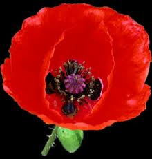

Drugs are derived from the milky secretions of the poppy flower bulb before it opens. Opiates are thought to mimic the effects of neurotransmitters in the CNS that prevent the feeling of pain, causing a euphoric trance-like state. Frequent use of opiates results in disruption of blood flow, increased risk of infections, and addiction.
The most common types of opiates include morphine, codeine, heroin, Demerol, and methadone.

The death rate for heroin addicts is more than twice the normal rate. The main cause of death of heroin users is overdosing. Heroin addicts do not use the drug for pleasure; they use it to prevent severe withdrawal symptoms.
Source: Beryl Simpson and Molly Connor-Ogorzaly. Economic Botany - Plants in Our World. Toronto: McGraw-Hill Publishing Company, 1986. (p.394)